Completed Projects

Non Formal Primary Education (NFPE)
Since the year 2000, around ninety non-formal primary schools in the Hatiya and Subarnachar upazilas of Noakhali district have been providing education up to the fifth grade. Most of the students from these schools get the opportunity to enroll in secondary schools. This project was active from 2000 to 2017. The project was funded by BRAC and supported by Proshika.
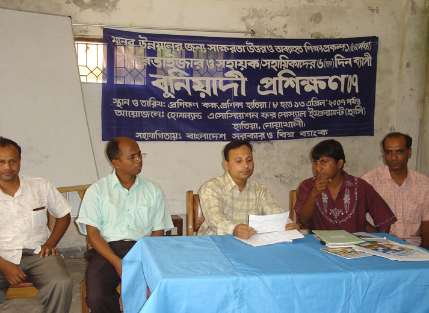
Post Literacy and continuing Education for Human Development Project (PLCEHD-1)
With significant support from Education Ministry, HASI has established 30 centers operating on a double-shift system, each serving 30 women learners in one shift and 30 male learners in the other providing voluntary and tertiary education. Each shift offers two courses: Post-Literacy (PL), which strengthens literacy skills, and Continuing Education (CE), which focuses on technical skill development. The centers are managed by two facilitators who guide learners through both programs. After completing the PL course, two technical instructors are recruited to deliver the CE component, ensuring comprehensive education and skill-building for all participants.
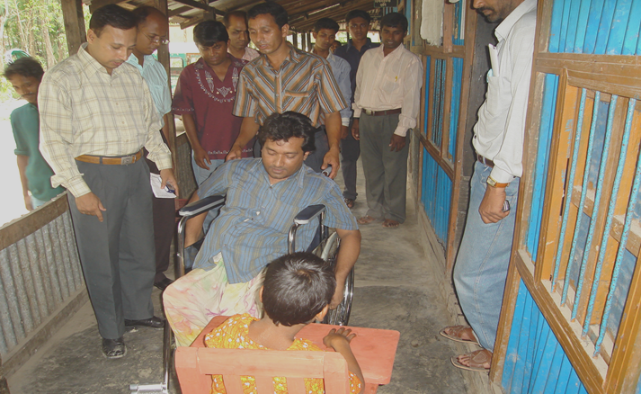
Community Based Rehabilitation for PWDs
Since its inception, HASI has been dedicated to supporting persons with disabilities (PWDs) through community-based rehabilitation programs. With the assistance of two Community Handicap and Disability Resource Persons (CHDRPs), HASI works with 60 PWDs, offering essential doorstep services such as primary rehabilitation therapy (PRT), referral services, inclusive education, and credit support for income-generating activities (IGA). Through these initiatives, HASI strives to integrate PWDs into the mainstream of development and empower them to lead independent and fulfilling lives.
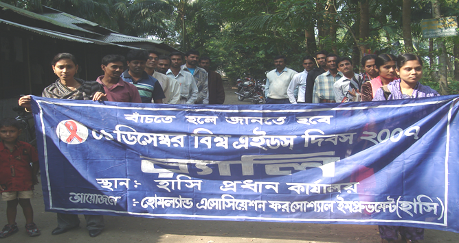
Water Sanitation and Health & HIV/AIDS Project
HASI collaborates with the Ministry of Health and Family Planning (MOH&FP) and NGO Forum to support the implementation of the National Immunization Days (NID) program. This partnership focuses on establishing Voluntary Surgical Contraception (VSC) services and producing ring slabs to address sanitation concerns for high-risk populations. Additionally, HASI conducts awareness-raising campaigns for communities at risk of HIV/AIDS to promote health education and disease prevention.
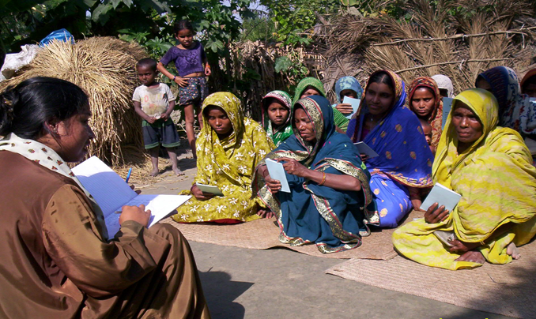
Micro Credit for Poverty Reduction
Since 2007, the project has been conducting microcredit programs across four branches in Hatiya Upazila to support low-income families in improving their financial stability and livelihoods. By providing small loans, the project enables beneficiaries to engage in income-generating activities, fostering economic independence and resilience. The initiative is funded by the Stromme Foundation and implemented in collaboration with CODEC, BRAC, and NCU, along with contributions from its own financial resources. This partnership has enhanced the program's reach and effectiveness, playing a vital role in poverty alleviation and community development in the region.
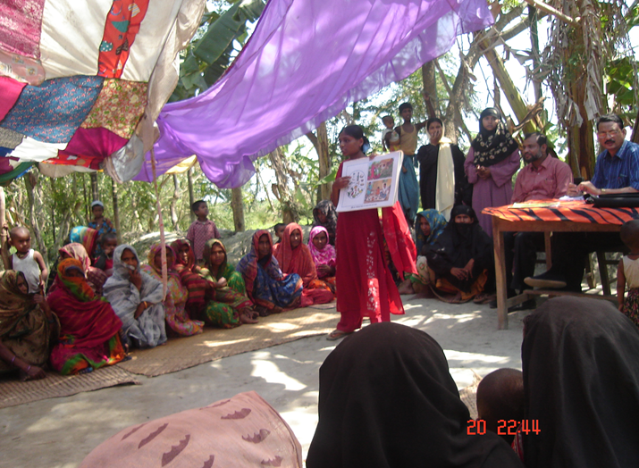
Char Development and Settlement Project-III (CDSP-III)
The project, implemented from 2005 to 2010 in the newly emerged islands of Hatiya Upazila, Noakhali, was funded with technical assistance from the Netherlands Embassy. The Bangladesh government, particularly the Water Development Board under the Planning Ministry, played a key role in collaboration. The project focused on improving various sectors such as agriculture, water and sanitation, disaster management, microcredit programs, non-formal primary education, homestead vegetable cultivation, and women’s development. These initiatives aimed to enhance the livelihoods and resilience of the coastal communities in the region.
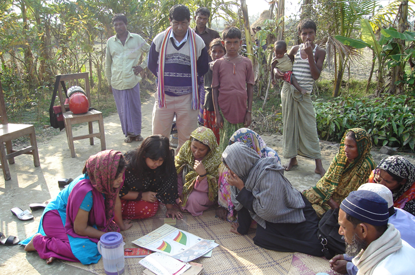
HASI- SHOUHARDO Program
In partnership with CARE-Bangladesh and funded by USAID, HASI has been implementing the SHOUHARDO program with the close support of the Village Development Committee. This program follows a fully community-led approach, where each community develops a Community Action Plan (CAP) based on Community Risk Assessment (CRA). The implementation is carried out through a community-driven process, enabling communities to design and undertake their own risk reduction plans to build resilience and foster sustainable development.
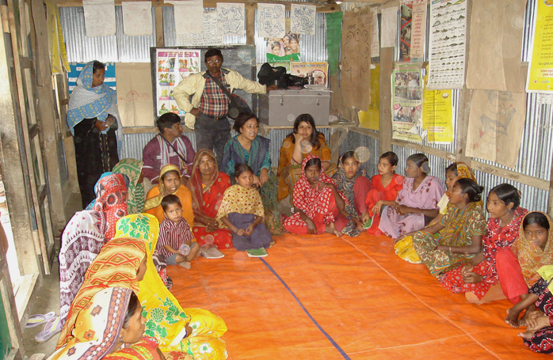
HASI- KISHOREE SANGLAP Program
With financial support from CODEC, HASI introduced the Kishoree Sanglap Program to empower adolescent girls. This program operates Kishoree Sanglap Centers where dialogue sessions are conducted with adolescents to build their awareness on Disaster Risk Reduction (DRR). The initiative encourages girls to take action and actively disseminate awareness messages within their communities, fostering resilience and informed decision-making.
Community Development and Arsenic Mitigation Project
Since the year 2000, this project has been implemented in Hajiganj Upazila of Chandpur district and Noakhali. Approximately 7,300 beneficiaries have received services under this project. Household tube wells have been scanned, defective ones have been repaired, and rainwater harvesting systems have been installed along with sand filters for clean water supply.
HNDPI
This project was implemented in Hatiya Upazila from 2003 to 2005, focusing on improving rural livelihoods and agricultural development. A total of 1,200 rural farmers actively participated in the project's implementation, receiving training and resources to enhance their productivity and income. The project received financial support from Danida, while CARE Bangladesh provided technical assistance to ensure effective execution and community engagement. Through this collaboration, the initiative aimed to promote sustainable farming practices and overall rural development in the region.
RFLDC Porject - Farmers Field School
The RFLDC (Regional Fisheries and Livestock Development Component) project was implemented in Hatiya Upazila of Noakhali district from 2007 to 2012. This initiative aimed to strengthen rural livelihoods by focusing on sustainable fisheries, livestock, and agricultural practices. The project was executed through the establishment of Farmer Field Schools (FFS), which served as vital hubs for knowledge-sharing and capacity-building among local farmers, particularly women. These schools provided hands-on training in improved farming techniques, resource management, and livelihood diversification to enhance productivity and resilience.
The project was funded by Danida (Danish International Development Agency) and the Government of Bangladesh (GoB), reflecting a strong collaboration between international donors and national authorities to foster sustainable rural development. The comprehensive approach of the RFLDC project not only promoted economic growth in the region but also empowered rural communities to adopt innovative practices and achieve long-term self-sufficiency.
Hysawa Fund (WATSBN)
The project was implemented in 12 unions of Hatiya Upazila in Noakhali district, benefiting approximately 1,200 patients. As part of the initiative, 800 deep tube wells were installed, 2,600 latrines were set up, and health and hygiene education was provided to the community. The project ran from 2015 to 2017 and was executed with funding and support from Danida and the Government of Bangladesh (GoB) under the DPSE program.
Climate Change Adaptation Project In Coastal Belt
The project was implemented in various remote areas of Hatiya Upazila in 2018. The initiative aimed to raise awareness about the impacts of climate change. Key activities included the installation of base-deep tube wells and toilets, raising the foundation height of houses, and providing training on cultivating saline-tolerant crops. The project was funded by the Australian Embassy (AusAid) and Hysawa Fund , in collaboration with the Government of Bangladesh (GoB).
Aila Rehab
The project in Hatiya Upazila of Noakhali district focused on rehabilitating families affected by disasters on Nijhum Dwip and nearby islands. As part of the initiative, homestead plots were prepared free of cost by engaging beneficiaries as cash-for-work laborers. Around 2,500 flood-affected families received non-food items, and 5,000 families were provided with dry food. The project was funded by NRC (Norwegian Refugee Council), with support from CARE Bangladesh.
Ongoing Projects
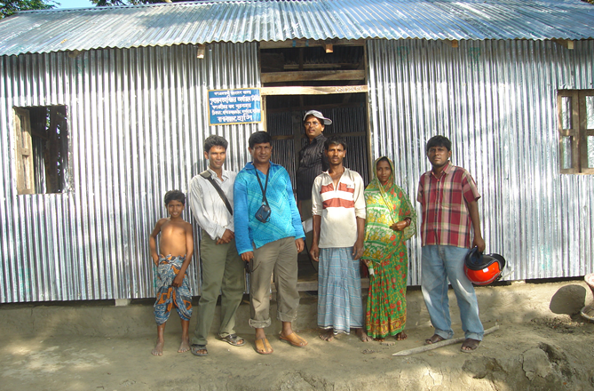
Rural Housing Loan Program
The project in Hatiya Upazila of Noakhali district, with financial assistance from Bank loans facilitated by HASI Bangladesh, has helped construct approximately 375 houses. These houses were distributed to beneficiaries through a loan-based system. The project has been under implementation since 2002 and continues to support housing and community development in the region.
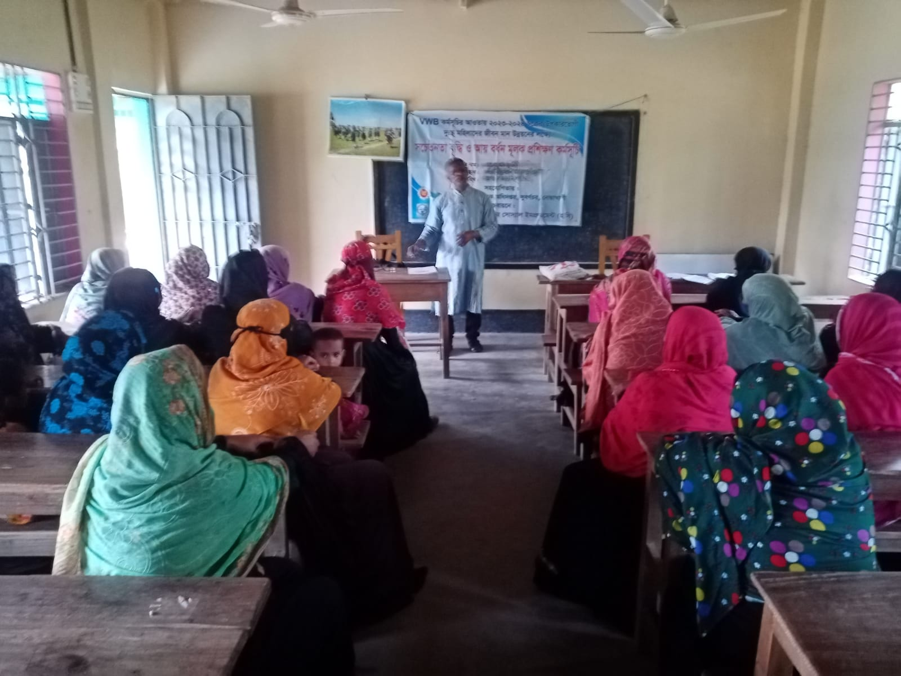
VWB Project
Since 2015, the VWB project has been implemented across various upazilas of Noakhali district, benefiting around 13,800 ultra-poor women across four phases. The project provides nine types of training focused on life skills, development, and income-generating activities to help women improve their livelihoods. Beneficiaries are also encouraged to participate in monthly savings programs and are linked to financial institutions for better economic opportunities. The project is funded by a World Bank program in collaboration with the Directorate of Women's Affairs. Currently, the VWB project operates in Hatiya, Subarnachar, and Senbagh upazilas, reaching 4,626 beneficiaries with training and development programs to promote economic empowerment and sustainable growth.
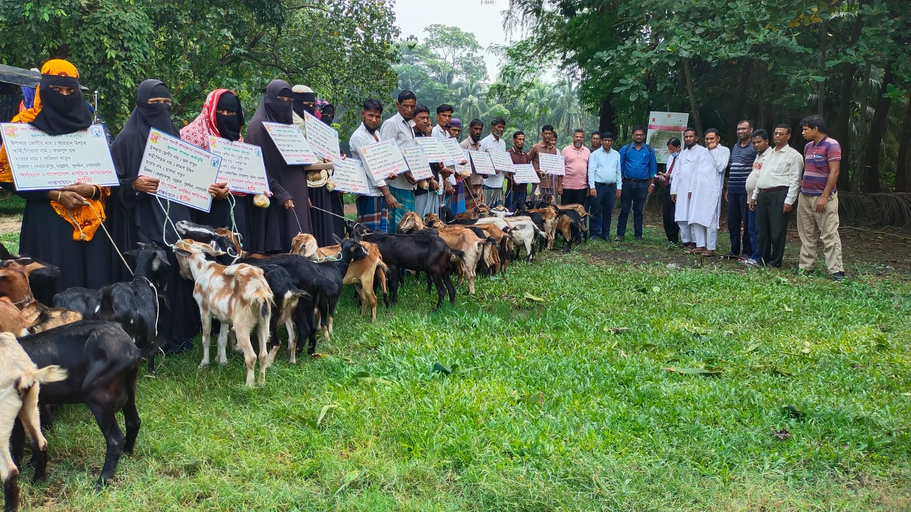
Post-disaster Rehabilation Project
The project has been actively supporting flood-affected, vulnerable families in Char Clark and Mohammadpur union of Subarnachar Upazila in Noakhali district by providing essential materials for rebuilding their homes and securing their livelihoods. As part of the initiative, 40 stables were distributed, and 300 sets of repair materials were provided to 28 severely affected ultra-poor families and 8 individual beneficiaries to assist them in repairing their homes and recovering from the devastation caused by floods. This initiative plays a crucial role in helping disaster-stricken communities become more resilient by ensuring they have the necessary resources to rebuild their lives. The project is funded by the Bangladesh NGO Foundation, an organization under the Ministry of Finance of the Government of Bangladesh, which continues to support ongoing efforts to provide disaster relief and rehabilitation. Through this initiative, the "Hashi" project remains committed to improving the living conditions of vulnerable communities in the region.
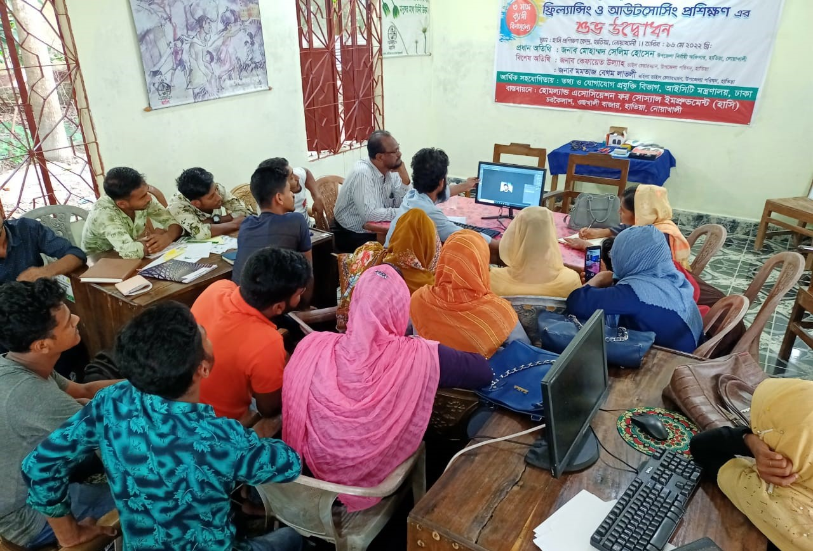
ICT Project for Developing Skilled Workforce in Freelancing and Outsourcing.
In the current rapidly changing and competitive global market, developing countries are facing increasing economic disparities, unemployment, and socio-economic instability. In this context, freelancing and outsourcing have emerged as viable solutions, particularly for addressing the growing unemployment crisis among the youth in Bangladesh. The project focuses on creating skilled manpower in freelancing and outsourcing, offering opportunities for individuals to achieve financial independence while working remotely. This initiative not only empowers people economically but also integrates them into the digital economy, promoting sustainable livelihoods. Freelancing has become a promising pathway for transforming traditional livelihoods into technology-based opportunities, enabling thousands to save time, expand businesses, and access healthcare, education, and jobs remotely. This project aims to foster a sustainable, inclusive, and technologically advanced workforce in Bangladesh for a better future.
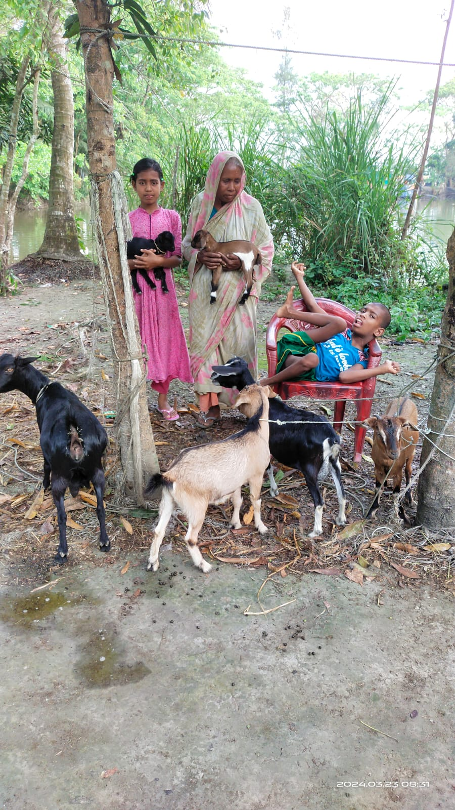
Development project for the rehabilitation of disabled and impoverished families.
Since 2012, under, THE BANGLADESH NGO FOUNDATION which is a sister concern of Bangladesh Finance Ministry, the program has undergone eight phases and is currently in its ninth phase in 2024. A special subsidy program for the disabled and impoverished has been implemented. Under this program, cows, goats, and sheep are distributed to enable beneficiaries to utilize resources like milk and engage in livestock farming for income generation. Rehabilitation services, including physical therapy, are provided to physically disabled children by trained CHDRPs (Community Health and Disability Rehabilitation Practitioners). Moreover, wheelchairs and other essential aids are distributed to special-needs individuals to enhance their quality of life. The program focuses on training and empowering vulnerable populations through seminars and practical knowledge to help them achieve self-reliance and improve their overall well-being.